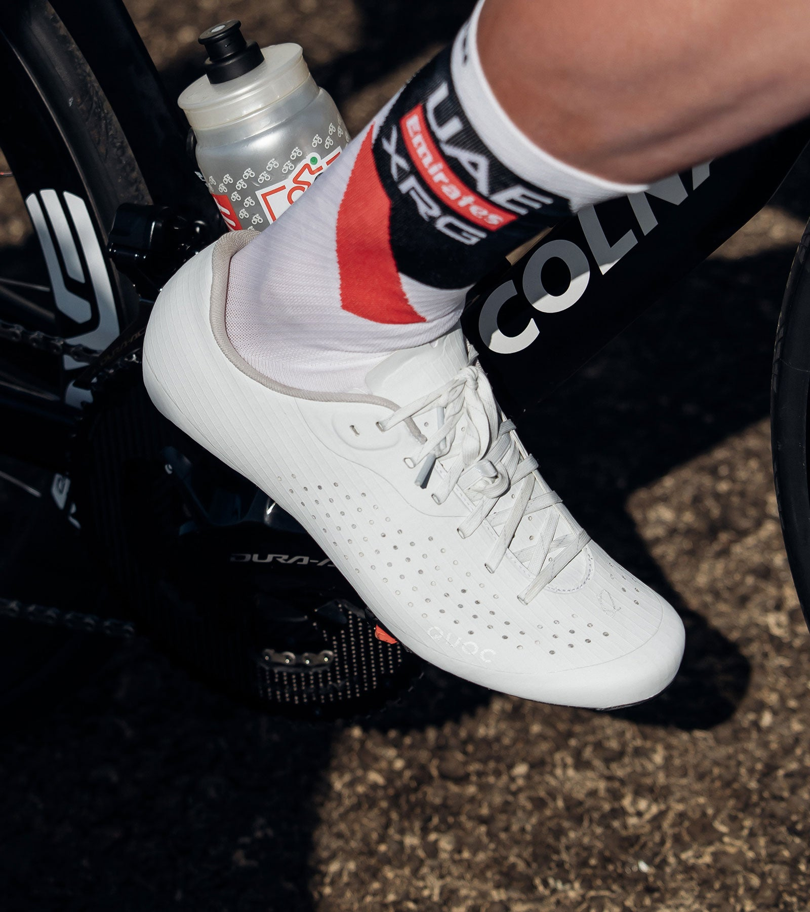
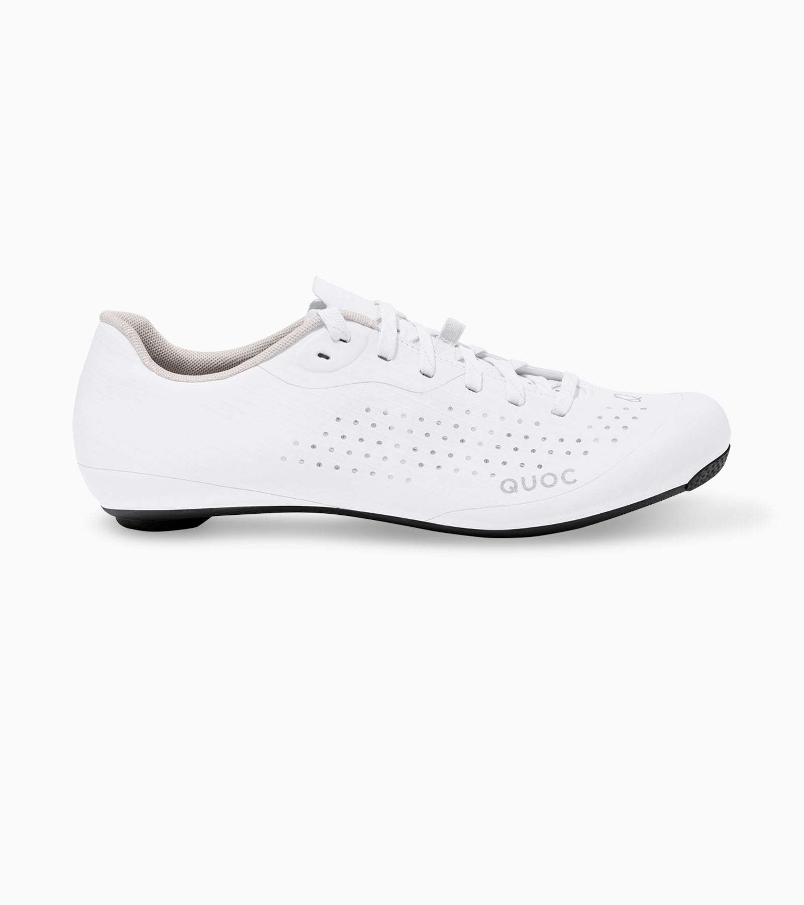
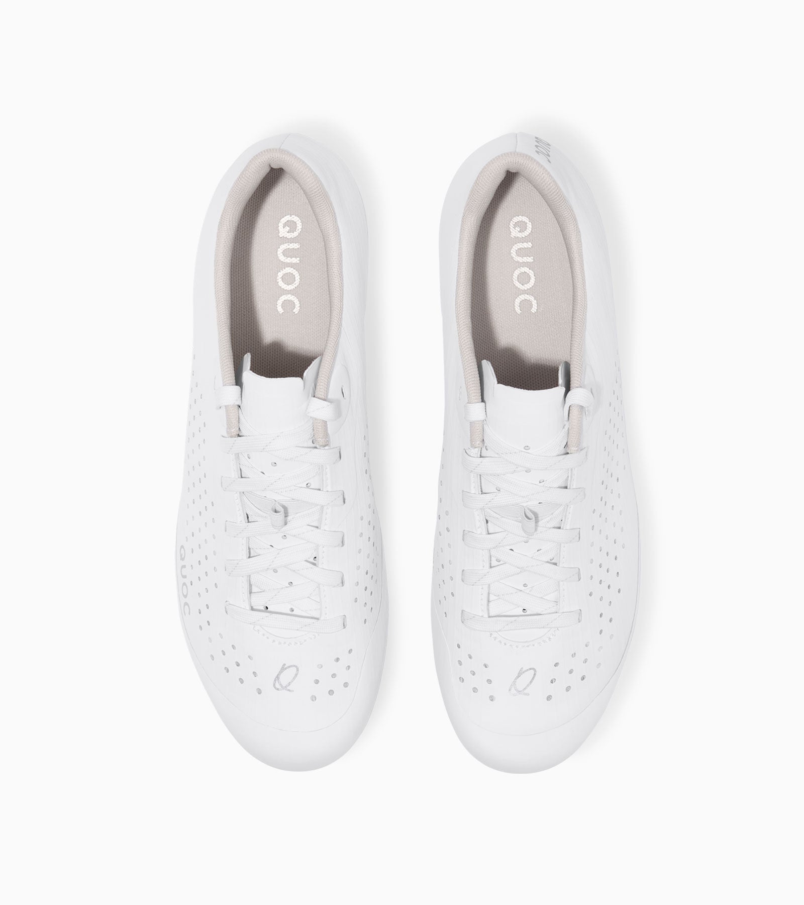
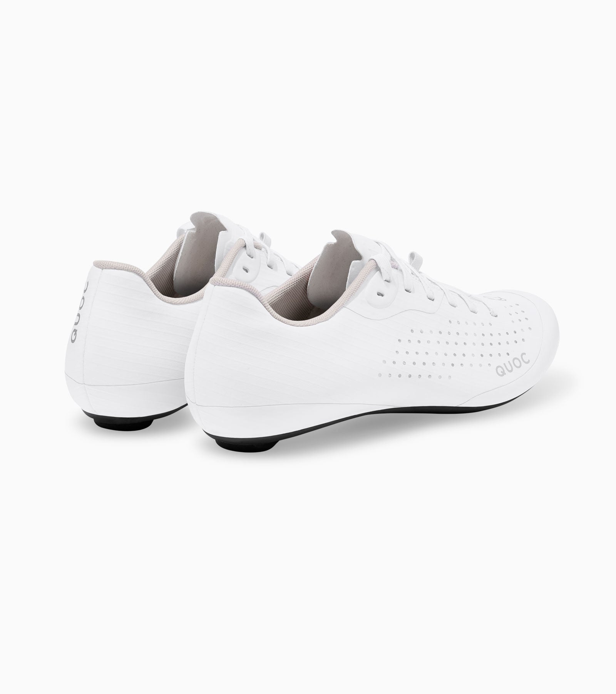
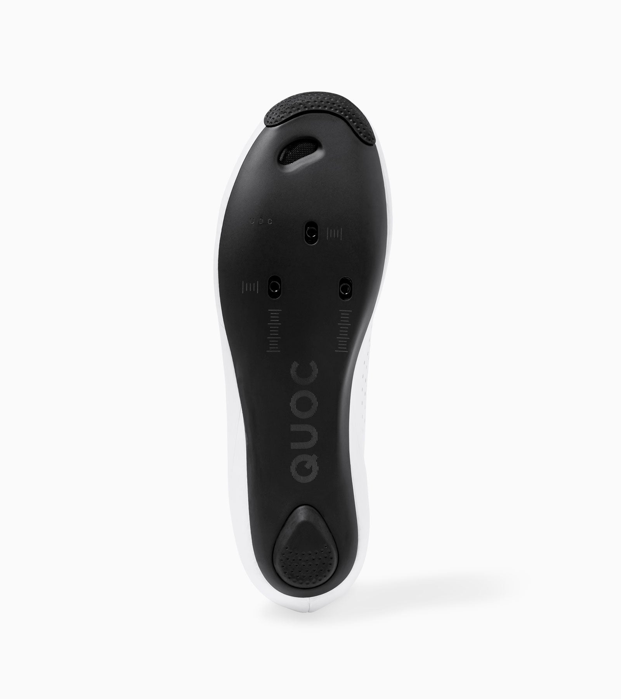

M3 PRO
The M3 with the ribbed all-season upper that holds the foot most firmly. Racing, indoor and outdoor training, even winter, in one pair. Developed with Geraint Thomas.
- WEIGHT
- 240g
- UPPER
- RIBBED TPU
- SOLE
- UD CARBON
- CLOSURE
- DUAL DIAL
Shoes that quietly do their job,
so the ride
stays the focus.
QUOC is a cycling shoe brand founded in London in 2009 by Quoc Pham. Having wound down a menswear label, he was commuting daily on a single-speed and grew tired of his everyday shoes wearing out against the pedal's toe cage. A sturdy sole slim enough to fit the cage, and a leather upper that still looked right off the bike. From that simple idea came QUOC's first shoe, the Fixed England.
QUOC doesn't measure performance in numbers alone. It starts from the emotional connection between people and their footwear, and from a shared love of riding. As a brand bridging cycling, culture and everyday life, QUOC balances elevated aesthetics with refined comfort so the rider can focus on nothing but the ride.

Elevated aesthetics,
refined comfort.
On the bike, a QUOC shoe is as firm as a race shoe. Off the bike, it looks like a well-made pair of shoes. Clean silhouettes instead of loud graphics, the colour border that became the brand's signature, an upper that wipes clean. The details are quiet, but they do their job every moment of the ride.
Everyone on the QUOC team rides. Every shoe is tested on long rides in real conditions, and feedback from competitive riders feeds into new lasts and uppers. More than a decade of that performance research made today's M3 and Gran Tourer.

A good shoe doesn't call attention to itself. It fits, it blends into the ride, and then it's forgotten. That is how QUOC thinks about design.

A carbon sole and wrap closure refined with WorldTour feedback. Race technology, translated for everyday riding.

From London commutes to gravel bikepacking. QUOC's inspiration always comes from the riders it rides with.

Introduced with the Gran Tourer in 2018, the colour border became the signature that makes a QUOC recognisable at a glance.


“In my late twenties, worn out by the fashion industry, what got me moving again was the ride to work every morning.”
Raised in inner-city London, Quoc Pham wound down his menswear label and commuted from Bermondsey on a single-speed bike. Ordinary shoes wore through quickly against the pedal cages, so he decided to make his own. Taking an English-made last from his former label, he visited shoe factories in Asia and taught himself shoe development. The result was his first shoe, the Fixed England.
He took prototypes in five colours to London bike shops including Condor Cycles, and sold 120 pairs in the first year. The brand that carried his name was soon shortened to QUOC.
In 2018 he launched the Gran Tourer, conceived on a bikepacking trip with friends. It was the first gravel-specific shoe with a walkable sole, and the first to carry the colour border that became the brand's signature. It sold out almost immediately.
By 2023 QUOC had built a global team, and the following year it achieved a goal the team had written down: QUOC's first season with Tour de France champion Geraint Thomas. Today QUOC is sold in more than 300 stores around the world.
Quoc Pham, founder of QUOC
FIND YOUR QUOCFrom racing to bikepacking, one pair for the way you ride.
A full-carbon race shoe refined with WorldTour feedback. Ribbed all-season upper and dual dials.
The same carbon race sole with large mesh vents. The M3 for hot, high-intensity riding.
Walkable rubber outsole, roomy toe box. The original gravel shoe for bikepacking and adventure.
A road shoe that puts comfort first. Foot-hugging PU upper, composite sole, Tech Dial III.
A lace closure on the same full-carbon platform as the M3 Pro. The precision of laces, rediscovered by the pro peloton.
No wasted energy.
From the local crit
to a WorldTour breakaway.
The M3 is the result of more than a decade of QUOC's performance research. A new last built from the feedback of competitive riders gives more support at the ball of the foot and more room at the toes, combining a natural fit with real support. The unidirectional carbon outsole, hand-laid and developed in-house, sends the rider's power straight to the pedal.
The M3 Pro was developed in direct collaboration with Tour de France champion Geraint Thomas. A tongue-free wrap closure and dual dials with parallel lace guides keep the foot locked in at peak effort. The M3 Air takes the same race platform and adds large mesh vents and an ultralight TPU upper for hot, high-intensity riding.

A hand-laid unidirectional carbon outsole developed in-house by QUOC. Built for stiffness and power transfer, with vents moulded into the M3 Air's sole.
A tongue-free wrap construction with dual dials on parallel lace guides. It holds the whole foot evenly without pressure points, and can be fine-tuned with one hand mid-ride.
A heel cup moulded to stop heel lift through the whole pedal stroke. A vibration-dampening insole and three arch inserts take care of comfort on long rides.
A gloss-finished TPU laminated mesh upper with a satin print border. Low stretch, scuff resistant, and clean again with a damp cloth.
The M3 with the ribbed all-season upper that holds the foot most firmly. Racing, indoor and outdoor training, even winter, in one pair. Developed with Geraint Thomas.
An ultralight TPU upper that moulds to the contours of the foot, with large mesh vents. The lightest M3, built for high-intensity riding and racing in high summer. Add the neoprene toe cover for colder days.
LOCKED IN, ALL SEASONWhite


BUILT FOR AIRFLOWWhite


The M3 Pro's upper was completed with feedback from Tour de France champion Geraint Thomas. The ribbed all-season upper keeps stretch to a minimum so the foot never slips, right to the last metres of a sprint, and the wrap closure holds the whole instep evenly.
The usual race-shoe compromise, choosing between firmness and comfort, isn't here. A vibration-dampening insole with anatomic pressure relief keeps the foot comfortable on long rides.
The M3 Air is made from a two-piece, multi-layer TPU upper. The ultralight material moulds to the contours of the foot, and large mesh panels move air across the whole foot. With vents moulded into the carbon sole, every detail is designed for hard riding in the heat.
226g per shoe in EU42. The lightest M3, yet it keeps the wrap closure, moulded heel cup and interchangeable arch supports of the M3 Pro.
| Model | M3 Pro / M3 Air |
|---|---|
| Use | Road racing, indoor and outdoor training |
| Sole | Unidirectional carbon fibre (hand-laid, developed in-house) |
| Upper | TPU laminated mesh (Pro: ribbed all-season / Air: ultralight with large mesh vents) |
| Closure | Dual dials, parallel lace guides, tongue-free wrap construction |
| Weight | Pro 240g / Air 226g (single EU42 shoe) |
| Cleat | 3-bolt road cleats (Look, Speedplay compatible) |
| Sizes | EU 38 ~ 47 |
| Colours | White |
| In the box | Three arch inserts included, neoprene toe cover compatible |
The original gravel shoe,
third generation.
Ride, walk, ride again.
In 2018 QUOC introduced the Gran Tourer, the first gravel-specific shoe with a walkable sole. Built on eight years of gravel development since then, the Gran Tourer III is QUOC's most advanced gravel shoe, made for bikepacking, adventure riding and off-road commutes.
A toe box roomy enough for multi-day wear, a glass-fibre composite midsole for pedalling efficiency, and a rubber outsole that is good to walk in off the bike. The jersey-lined collar and Tech Dial III hold the foot without pressure points.

A dial that tightens in 10-degree steps, with metal-core laces. Tighten or release with one hand, even mid-ride.
A lightweight upper cut from a single piece, with ventilation holes placed where they matter. Stain and weather resistant, and the leather-like finish looks right off the bike too.
A newly formulated nylon glass-fibre compound delivers power, and an enhanced tread takes care of the walking sections. The cleat is fully recessed.
A wider toe box so toes don't bunch and hot spots don't form on long rides and hike-a-bike sections.
QUOC's signature colour border, reinterpreted as a wave-pattern reflective print. On dark roads, your feet are seen first.
A double-printed rubber toe guard and a jersey-lined collar. Fine against rocks and dirt, and fine for a full day of wear.
ASH · LILAC HAZE2026 Haze Collection


The Gran Tourer is the shoe Quoc Pham dreamed up on a bikepacking trip with friends. A gravel shoe you could pedal in all day, walk in, and keep wearing at camp. The first generation sold out almost as soon as it launched in 2018, and became the root of QUOC's gravel line.
The third generation keeps that principle while getting lighter and tougher. A one-piece upper, a new outsole compound, a wider toe box and the reflective wave border are this generation's changes.

| Use | Gravel, bikepacking, commuting |
|---|---|
| Sole | Nylon composite midsole + TPU rubber outsole (walkable) |
| Upper | One-piece microfibre, jersey-lined collar |
| Closure | Single dial (QUOC Tech Dial III) |
| Weight | 321g (single EU42 shoe) |
| Cleat | 2-bolt MTB/SPD, fully recessed |
| Sizes | EU 37 ~ 47 |
| Colours | Ash / Lilac Haze |
Road shoes that
put comfort first.
So you go further.
Motion is a road shoe for riders who want comfort and performance together. A revised single dial and lace guide placement give a responsive fit, and the PU upper follows the shape of the foot more with every ride. A slightly roomier last and a pressure-relieving tongue take care of all-day comfort.
Evenly spaced vents and an extended rubber toe guard widen its range, and the carbon glass-fibre composite sole gives club rides all the stiffness they need without giving up comfort.

Micro-adjustment in 10-degree steps. Tighten or release with one hand, even with gloves on.
A one-piece, leather-like PU upper with ventilation perforations. Scuff resistant and easy to clean.
A soft tongue, padding and a moulded heel cup. Feet stay comfortable right to the end of a long ride.
A carbon and glass-fibre composite sole. Just the right stiffness for club rides and weekend adventures.
WHITE · GRAPHITEWhite · Graphite


| Use | Road, social riding, adventure |
|---|---|
| Sole | Carbon / glass-fibre composite |
| Upper | One-piece PU (leather-like finish, ventilation perforations) |
| Closure | Single dial (QUOC Tech Dial III) |
| Weight | 255g (single EU42 shoe) |
| Cleat | 3-bolt road cleats |
| Sizes | EU 37 ~ 47 |
| Colours | White / Graphite |
The lace closure
the pro peloton came back to.
On the M3 Pro platform.
The M Pro Lace is a road race shoe born from the pro peloton's renewed preference for lace closures. It is for riders who want a secure fit, classic styling and dependable performance in one shoe.
Built on the same platform as the M3 Pro, it focuses on foot stability, aerodynamics and power transfer. A heel cup that stops heel lift, a vibration-dampening insole, and a mesh-and-TPU upper that ventilates without losing structure. A laminated toe border protects the toe from wear.

Two-tone laces spread pressure evenly across the foot. They don't come loose: tie them once and they stay put to the end of the race.
The same full-carbon sole platform as the M3 Pro, with the stiffness and power transfer validated at the Tour.
Three layers of mesh with crisscrossed TPU ventilate while reducing drag. An aerodynamic profile with time trial positions in mind.
A silhouette that follows QUOC's original road shoe, the Night Mono. A padded, sculpted heel cup and a refined last keep the foot locked in.
WHITEWhite




| Use | Road racing, training, time trials |
|---|---|
| Sole | Unidirectional carbon fibre (same platform as the M3 Pro) |
| Upper | TPU laminated triple-layer mesh, TPU toe border |
| Closure | Lace (two-tone laces) |
| Weight | 245g (single EU42 shoe) |
| Cleat | 3-bolt road cleats (Look, Speedplay compatible) |
| Sizes | EU 38 ~ 47 |
| Colours | White |
| In the box | Vibration-dampening insole, three arch inserts included |
FIND YOUR SIZEEU sizes, foot length in mm
| EU | 37 | 38 | 39 | 40 | 41 | 42 | 43 | 44 | 45 | 46 | 47 |
|---|---|---|---|---|---|---|---|---|---|---|---|
| UK | 4 | 5 | 6 | 6.5 | 7 | 8 | 9 | 9.5 | 10.5 | 11 | 12 |
| US | 5 | 6 | 7 | 7.5 | 8 | 9 | 10 | 10.5 | 11.5 | 12 | 13 |
| Road (M3 · M Pro Lace · Motion) | 230-235 | 236-242 | 243-250 | 251-256 | 257-263 | 264-270 | 271-277 | 278-283 | 284-290 | 291-296 | 297-302 |
| Gravel (Gran Tourer III) | 227-232 | 233-239 | 240-246 | 247-253 | 254-259 | 260-266 | 267-273 | 274-279 | 280-286 | 287-292 | 293-299 |
Measure your foot length and choose an EU size. If you fall between two sizes, QUOC recommends the larger one. The road and gravel lasts differ slightly, so read the right row. The best way to find your size is to try them on at Rubi Workshop or a QUOC dealer near you.
From a commute's frustration
to the WorldTour,
the road QUOC has travelled.
From 2009, when a London cyclist decided to make his own shoes, to today, when a Tour de France champion rides in QUOC. Without big capital, QUOC started from one rider's need and was built up one pair at a time.

Quoc Pham founds QUOC in Bermondsey, London. The starting point was the idea of a shoe made for toe-cage pedals.
Taking an English-made last to factories in Asia and teaching himself development, he completes his first shoe, the Fixed England.
Prototypes in five colours are stocked by London shops including Condor Cycles; 120 pairs are sold in the first year.
The Gran Tourer launches, the first gravel-specific shoe with a walkable sole. The signature colour border appears for the first time, and it sells out almost immediately.
QUOC builds a global team, and a team of riders begins testing every shoe on real rides.
QUOC's first season with Tour de France champion Geraint Thomas. WorldTour feedback leads to the M3 Pro.
The Haze Collection introduces new silhouettes, colours and materials. The Gran Tourer III and Motion join the range, and collaborations with MAAP, SMITH and Raer continue.

Shoes have to be tried on. At Rubi Workshop you can try every QUOC model, and we'll help you find the model and size that fit your riding and your feet.
QUOC's official distributor in Korea is Rubi Supply, the B2B channel of Rubi Company. For stockist enquiries and trade terms, please contact Rubi Supply.